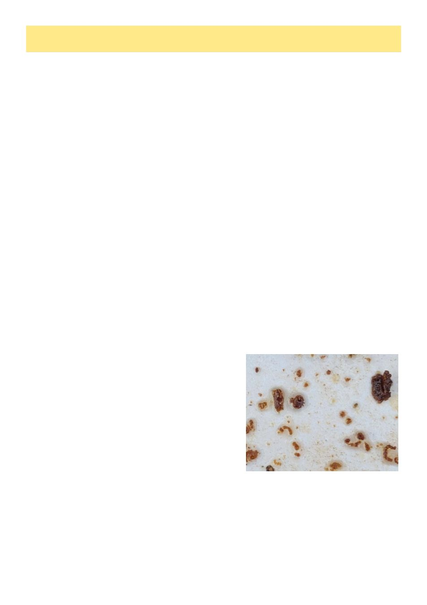

10
Australian Bee Journal
Don’t Drop The Mite Drop!
(Continued on page 11)
By Andrew Wootton
The recommended quantitative mite monitoring methods include alcohol and soapy water washing as well as the
sugar shake (although this is less accurate and not non-lethal1). Drone uncapping and sticky-mat mite-fall are gener-
ally regarded here in Australia as suitable only for surveillance for the presence or absence of mites.2 Despite this,
there can be considerable merit in measuring mite drop and indeed in the United Kingdom, this is strongly favoured
as a method for monitoring.
―The Honey Bee Solution to Varroa,‖3 essential reading for all of us hoping for a treatment-free future
(unfortunately rather distant), describes the multi-year project in Southern England to select for varroa-resistance.
The Westerham beekeepers opted for natural mite drop onto sticky boards as their preferred method of monitoring,
citing additional advantages in chewed-mite evidence for hygienic behaviour. Their success in achieving regions
with population-level varroa-resistance merits our admiration (although we should not underestimate the years of
effort and magnitude of the task).
In New Zealand, data from their 2021 colony loss survey showed that only 30% of beekeepers monitor for var-
roa. This is surprising. Richard Hall and Hayley Pragert (Biosecurity New Zealand) conducted a small trial of hive-
floor monitoring and suggest this may have been overlooked as a valuable tool.4
Let‘s look at natural mite drop a little more closely and try to understand its pros and cons. It‘s non-invasive, one
advantage that may reduce reluctance to monitor. Measurement is possible when it‘s too cold to open the hive. Mite
fall monitors the whole colony rather than a sample. However, its accuracy is affected by colony size and whether it
is rearing brood, although it can be reliable if these are taken into account.5 It is also variable from day to day, pos-
sibly by as much as 250%.6 Counting over 3 or more days will help.7 All this suggests a cautious approach to its
interpretation, but natural mite fall is certainly better than no monitoring.
As winter approached this year, I was faced with a problem. Varroa was being detected all around me, but try as
I might, I couldn‘t find mites in my washes. In my former life as a hospital scientist, efforts in quality assurance
were unconstrained. These ensure test results are meaningful and a fundamental concept is the confidence interval
which provides the measure of uncertainty in a result. Can this be applied to mite sampling and does 300 bees in a
mite wash give an accurate picture? I soon found myself way out of my statistical depth! However, I turned to an
old friend and former colleague, Ian Farrance whose numerical mastery far exceeds mine. He affirms that sampling
is best defined by the binomial distribution and with a sample size of 300, if you found 20 mites (better expressed as
a percentage – rounded to 7%), the 95% confidence interval would be between 4% and 10%. Here we have an idea
of the margin of error around our result. The calculations are shown on page 11.
Randy Oliver in one of his many invaluable articles8 has also addressed this problem. His concern is to have cer-
tainty in detecting a 2% infestation (in other words 6 mites in half a cup of bees) in order to commence treatment.
Calculating, once again using the binomial distribution, results in a probability of 99.8% of finding at least one mite.
This indicates that the sample size of 300 is adequate for our purposes, although the infestation numbers obtained
are by no means absolute.
Returning to my problem before winter, do I have mites in my
hive and should I treat prophylactically? Kris Fricke in his article
in the May ABJ9 discusses high risk scenarios during pollination,
suggesting a more flexible approach to treatment decisions than
simple thresholds. However, he reiterates that if a treatment
doesn‘t reduce the total number of treatments you have to do in a
year, you really shouldn‘t do it. But my bees are varroa naïve,
brood raising in Melbourne is continuous throughout winter and if
there are mites at the start, they will build substantial numbers by
spring. With slow-release oxalic acid strips ready to install, is
there really a downside to using them?
Faced with this dilemma, I resorted to what I hoped might be a
more sensitive test for mites. As distinct from accuracy, sensitivi-
ty is the ability to detect presence. Establishing a sticky board
below the hive, I measured natural mite drop over 3 days. Sure enough, I found my first mite! Oxalic strips are in
and fingers are crossed. Interestingly, no further mites have been detected post-treatment, perhaps indicating this
was very early in the infestation. I know of two other beekeepers who have adopted this early intervention ap-
proach. Only time will tell if we have been far-sighted or overcautious. Of course, much of this becomes somewhat
academic next season as mite numbers threaten to overwhelm us in the acute reinfestation wave. Despite this, natu-
ral mite fall can be a useful addition to your toolbox.
Andrew Wootton is Vice President of the VAA and a certified master beekeeper with the Eastern Apicultural Society
of N America. He first started beekeeping in the 1960s
References
1. Allerton, Mike, ―Sugar shake.‖ Australian Bee Journal 107, no. 1(2026): 8-9.
2. Varroa Mite Management. National Varroa Mite Management Program V2025-07 https://www.varroa.org.au/
trainers-material